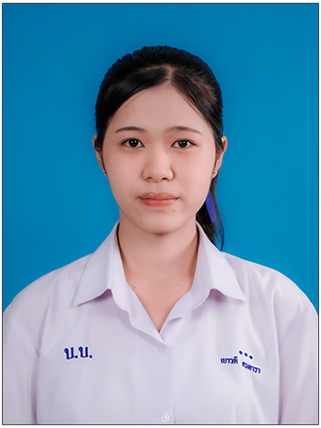

มาทำความรู้จักตัวตน ความสนใจ และเรื่องราวของฉันกัน

สวัสดีค่ะ ฉันชื่อ นางสาวเยาวดี ดวงดารา ชื่อเล่น แป้ง เป็นนักเรียนชั้นมัธยมศึกษาปีที่ 6 อายุ 18 ปี เกิดวันที่ 24 พฤษภาคม 2551
ฉันเป็นคนที่ชอบเรียนภาษา มีความสนใจด้านภาษาและการสื่อสาร และชอบทำกิจกรรมร่วมกับผู้อื่น
นักเรียน ม.6
ภาษาและการสื่อสาร
การทำงานร่วมกับผู้อื่นได้ดี ทักษะด้านการสื่อสาร มีความเป็นผู้นำ
เรียนรู้เกี่ยวกับภาษาและวัฒนธรรม
ม.1-3 แผนการเรียนอังกฤษ-จีน
ม.4-6 แผนการเรียนเตรียมมนุษยศาสตร์ภาษาจีน
กำลังเตรียมตัวสำหรับการศึกษาต่อ และค้นหาเส้นทางที่เหมาะกับตัวเอง